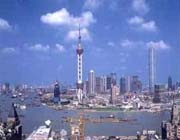

| 雄峰俊岭 | 滔滔大河 | 都市盛景 | 互动 | |||||
|
浦东新区是上海的一个重要组成部分，位于横穿上海市区的黄浦江东面，面积522平方公里，人口153.4万。由于历史上黄浦江两岸没有桥梁和隧道沟通，浦东虽然与繁华的上海外滩、南京路仅一江之隔，但经济发展远远落后于上海老市区。
1990年 4月18日，中国政府宣布开发开放上海浦东，  提出以浦东开发开放为龙头，进一步开放长江沿岸城市，尽快把上海建成国际经济、金融、贸易中心之一，带动长江三角洲和整个长江流域地区经济的新飞跃。 |
||||